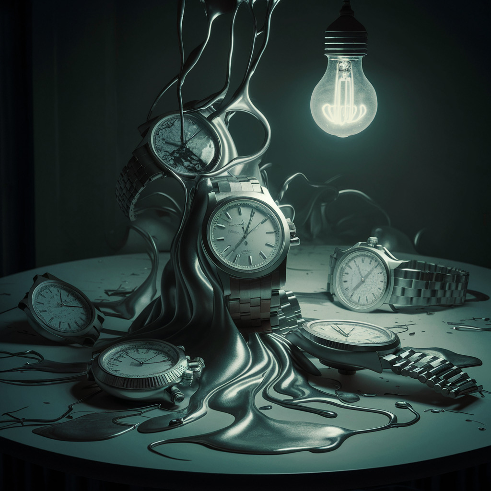
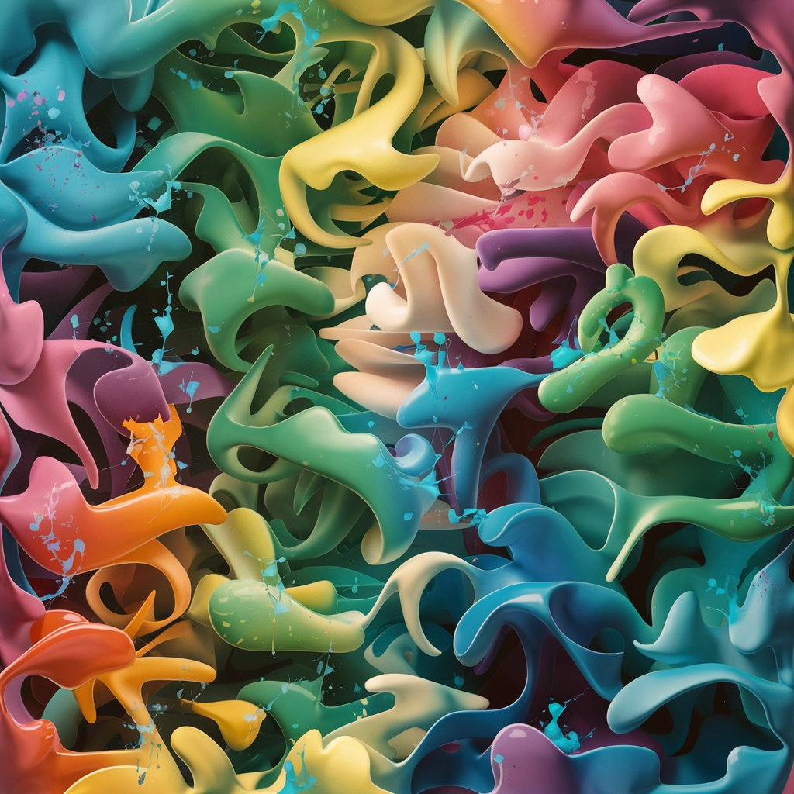
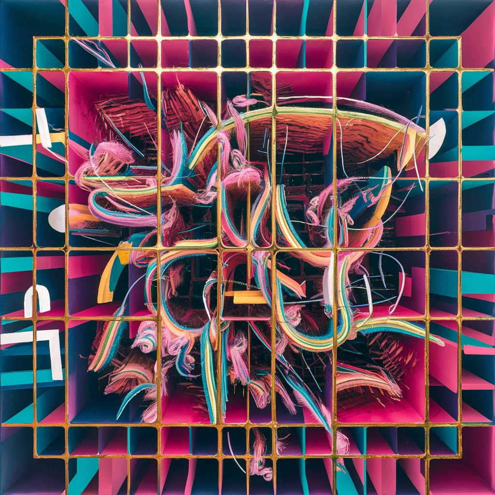

Nuestras obras más destacadas
-
"Flujo de tiempo" por Seth Harrison.
En nueva y moderna versión de la clásica obra de Salvador Dali
nos muestra una metáfora de como el tiempo
se nos puede ir entre los dedos como si fuera agua. -
"Color Splash" por Roman Osbourne.
Una combinación de colores y estilos donde el autor
expresa como la vida nos puede salpicar de distintas
formas, ya sea con alegría, tristeza, amargura o
con las clásicas sorpresas que a todos nos gustan. -
"Explosión Quadcore" por Heytham Cougar.
En esta obra moderna y abstracta el artista quiso
reflejar algo que a muchos nos ha ocurrido más de una
vez: tener la cabeza "llena de problemas". Los cuadros representan las prioridades de cada uno
notando como hay cuadros o problemas con mayor importancia que otros, pero siempre dentro
de un solo cuadro gigante: la vida misma. -
"La nuova Gioconda" por Seth Harrison

En esta nueva obra del reconocido pintor modernista, vemos a la clásica obra de Leonardo da Vinci
en una época más reciente, lo cual nos deja como ejemplo el cómo habría sido esta obra maestra
si su autor original hubiera nacido en el siglo XX.